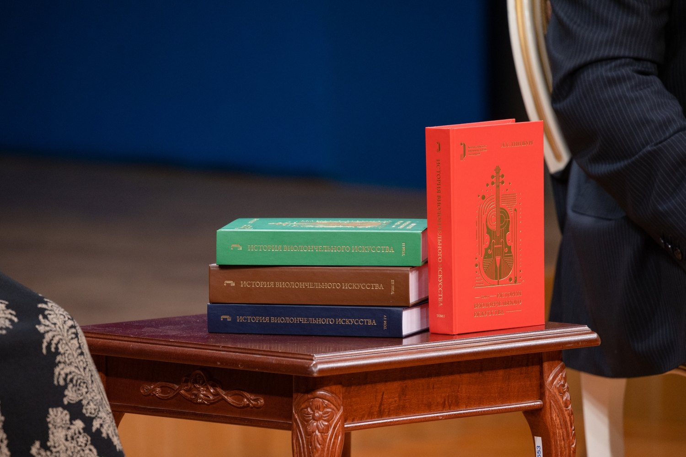
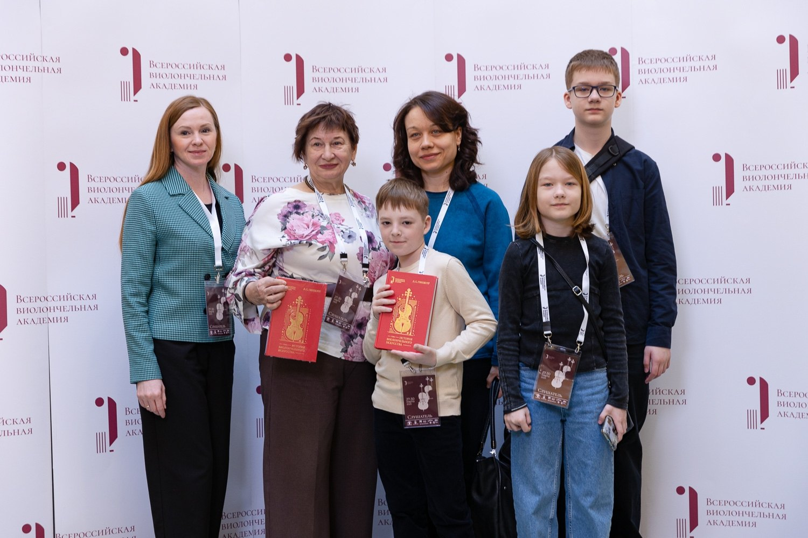

Переиздание «Истории виолончельного искусства» Льва Гинзбурга
Одним из крупных издательских проектов Академии стало переиздание четырёхтомного труда Льва Гинзбурга «История виолончельного искусства», подготовленное совместно с издательством «Музыка». Презентация издания состоялась в марте 2026 года.
Этот фундаментальный русскоязычный труд охватывает историю виолончельного искусства и служит важным источником для исполнителей, преподавателей, студентов и исследователей. Проект позволил вновь сделать его доступным заинтересованным читателям в научно отредактированном виде.
Академия инициировала переиздание, организовала научную редактуру, участвовала в подготовке издания, его презентации и распространении.
Научным редактором выступила Татьяна Алексеевна Лукашина. Подготовка четырёхтомника потребовала подробной проверки текста и иллюстративного материала. В ходе работы были исправлены фактические ошибки и неточности, уточнены имена, даты, сведения и атрибуции, проверены иллюстрации и подписи к ним. Идеологически обусловленные оценки и формулировки были пересмотрены; издание дополнено редакторскими комментариями и уточнениями.
Существенной частью проекта стало распространение книг. Комплекты передавались библиотекам, музыкальным школам, деятелям культуры и искусства, организациям-партнёрам, а также слушателям и участникам ежегодной Всероссийской виолончельной академии. Эта работа помогла расширить доступ к профессиональной литературе и поддержать интерес к истории инструмента.

